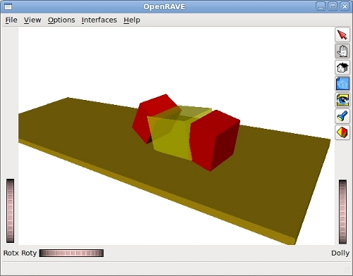

Gracias a Javier González y Juan González (otro Juan que se llama igual que yo) del Robotics Labs de la UC3M me enteré de la existencia del simulador Openrave. Es un entorno para la simulación/planificación de Robots, usado fundamentalmente por investigadores.
Es libre y multiplataforma. Y de ahí que para mi fuese “amor a primera vista“. Decidí aprenderlo y empezar a usarlo para simular los robots modulares.
En este vídeo podéis ver la simulación de la locomoción del modelo hexaédrico de Minicube-I. También podréis ver lo fácil que es usar el visualizar por defecto de OpenRave:

La simulación está programada en C++. En esta página del wiki podéis encontrar el código fuente así como más ejemplos que he hecho y que iré añadiendo en el futuro.